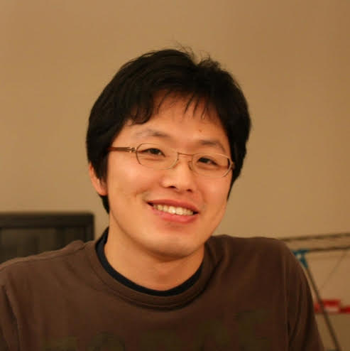

Overview
Project Team
Publications
Software
Closing the User-Model Loop for Understanding Topics in Large Document Collections
Project funded by the National Science Foundation (IIS-1409287,
UMD; IIS-1409739,
BYU)
co-PI: Jordan Boyd-Graber (Colorado),
PI: Leah Findlater (Maryland), PI: Eric Ringger (BYU), co-PI: Kevin Seppi (BYU)
Overview
Individuals and organizations must cope with massive amounts of unstructured text information: individuals sifting through a lifetime of e-mail and documents, journalists understanding the activities of government organizations, companies reacting to what people say about them online, or scholars making sense of digitized documents from the ancient world. This project’s research goal is to bring together two previously disconnected components of how users understand this deluge of data: algorithms to sift through the data and interfaces to communicate the results of the algorithms. This project allows users to provide feedback to algorithms that were typically employed on a “take it or leave it” basis: if the algorithm makes a mistake or misunderstands the data, users can correct the problem using an intuitive user interface and improve the underlying analysis. This project jointly improves both the algorithms and the interfaces, leading to deeper understanding of, faster introduction to, and greater trust in the algorithms we rely on to understand massive textual datasets. Furthermore, source code and functional demos will be shared publicly, and tutorials will be shared online and in person in to aid the adoption of the methodologies.
This project enables computer algorithms and humans each to apply their strengths and collaborate in managing and making sense of large volumes of textual data. It “closes the loop” in novel ways to connect users with a class of big data analysis algorithms called topic models. This connection is made through interfaces that empower the user to change the underlying models by refining the number and granularity of topics, adding or removing words considered by the model, and adding constraints on what words appear together in topics. The underlying model also enables new visualizations in the form of a Metadata Map that uses active learning to focus users’ limited attention on the most important documents in a collection. Users annotate documents with useful meta-data and thereby further improve the quality of the discovered topics. The project includes evaluations of these methods through careful user studies and in-depth case studies to demonstrate that topics are more coherent, users can more quickly provide annotations, users trust the underlying algorithms more, and users can more effectively build an understanding of their textual data.
<< back to top
Project Team
| Jordan Boyd-Graber Assistant Professor, Computer Science (Colorado) | |
| Leah Findlater Assistant Professor, iSchool (UMD) | |
| Eric Ringger Associate Professor, Computer Science (BYU) | |
| Kevin Seppi Professor, Computer Science (BYU) | |
| Connor Cook Undergrad, Computer Science (BYU) |
|
 |
Paul Felt PhD Student, Computer Science (BYU) |
| Ethan Garofolo MS Student, Computer Science (BYU) |
|
|  | Tak Yeon Lee PhD Student, Computer Science (UMD) |
 |
Jeff Lund PhD Student, Computer Science (BYU) |
| Fenfei Guo PhD Student, Computer Science (Colorado) | |
| Varun Kumar PhD Student, Computer Science (UMD) |
|
| Alison Smith PhD Student, Computer Science (UMD) | |
| Thang Nguyen PhD Student, Computer Science (UMD) | |
| Viet-An Nguyen PhD Student, Computer Science (UMD) |
|
| Nozomu Okuda MS Student, Computer Science (BYU) |
|
| Forough Poursabzi PhD Student, Computer Science (Colorado) |
<< back to top
Publications (Selected)
-
~~Pubs:Closing the Loop:2016~~
~~Pubs:Closing the Loop:2015~~
- Paul Felt, Kevin Black, Eric Ringger, Kevin Seppi, Robbie Haertel. Early Gains Matter: A Case for Preferring Generative over Discriminative Crowdsourcing Models. North American Association for Computational Linguistics. Denver, Colorado. 2015. ~~Pubs:Closing the Loop:2014~~
- Paul Felt, Kevin Black, Eric Ringger, Kevin Seppi, Robbie Haertel. On Multinomial vs. Log-linear Crowdsourcing Models with Mean-field Variational Inference. NIPS 2014 Workshop on Crowdsourcing and Machine Learning. Montreal, Canada. 2014.
Software
Datasets
Media
-
~~Media:Closing the Loop~~
Acknowledgments
This work is supported by the National Science Foundation. Any opinions, findings, and conclusions or recommendations expressed in this material are those of the researchers and do not necessarily reflect the views of the National Science Foundation.